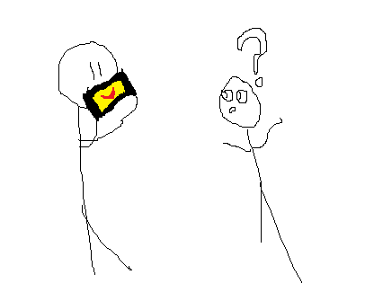

LipSync is GOOD CLEAN FAMILY FUN.
It's a port of a Mario Party Advance Gaddget that let you pretend you had the mouth of a Nintendo character. The four characters are Mario, Peach, Boo, and Goomba. They all come in separate apps, which can be downloaded together >>here. Also, thanks to PabloPPP, there is a convenient all-in-one launcher, which can be found >>here. The all-in-one won't work with the Boo Application due to a .plist overlap, but you can modify this easily if you know what you're doing.

I didn't really explain this Application much... Full Documentation is on ipodtouchfans.